Self-study web lesson. Each section matches one slide in the PowerPoint.
Core formula
F = ma · a = F/m
Weight idea
Fg = mg · Wapp can change
Energy formulas
W = F×s · Ek = 1/2mv² · Ep = mgh
Lesson map
- 1. Dynamics for Medical Equipment
- 2. Three Parts of Mechanics
- 3. Why Dynamics Matters in Hospitals
- 4. Force Changes Motion
- 5. Inertia
- 6. Heavy Bed vs Light Cart
- 7. Newton’s First Law
- 8. Newton’s Second Law
- 9. Meaning of F = ma
- 10. Newton’s Third Law
- 11. Free-Body Diagram Review
- 12. Forces on a Moving Cart
- 13. Net Force
- 14. Gravity Pulls Down
- 15. What Is Weight?
- 16. At Rest: Same Size
- 17. Important Difference
- 18. Elevator Going Up
- 19. Elevator Going Down
- 20. Free Fall
- 21. Hospital Link: Patient Lift
- 22. Friction
- 23. Simple Friction Idea
- 24. Push Cart with Friction
- 25. Task 1: Find Acceleration
- 26. Task 2: Find Force
- 27. Task 3: Push and Friction
- 28. Task 4: Elevator Apparent Weight
- 29. Task 5: Elevator Going Down
- 30. Mechanical Work
- 31. Work Unit
- 32. Work Example
- 33. Kinetic Energy
- 34. Potential Energy
- 35. Energy Safety Idea
- 36. Task 6: Work
- 37. Task 7: Kinetic Energy
- 38. Task 8: Potential Energy
- 39. Mixed Task: Lift
- 40. Common Mistakes
- 41. Dynamics Summary
- 42. Final Message
Part 1 — From Kinematics to Dynamics
Dynamics explains why motion changes: forces cause acceleration.
Dynamics for Medical Equipment
Forces. Motion. Newton’s Laws. Energy.
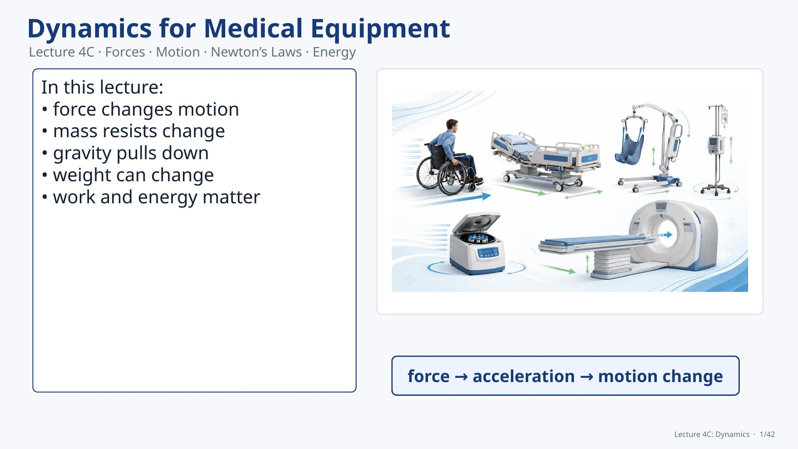
Today we study dynamics. Dynamics connects force and motion.
In kinematics, we described motion. We asked: how does it move?
Now we ask a deeper question: why does motion change?
The answer is force. Force can create acceleration.
Think and answer
What does dynamics study?
Show answer
Force and motion. Dynamics explains why motion changes.
Three Parts of Mechanics
Statics, kinematics, dynamics.
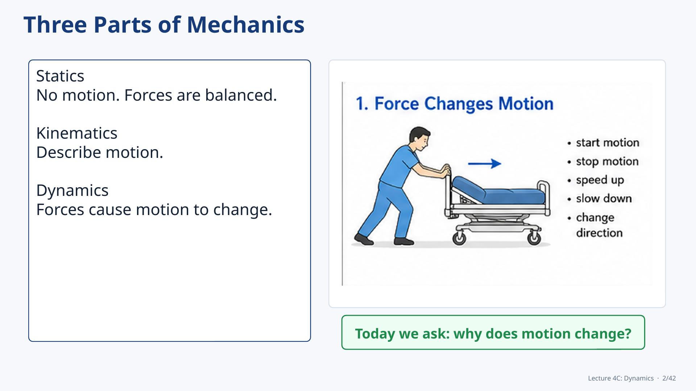
Mechanics can be divided into three parts.
Statics: the object does not move. Forces are balanced.
Kinematics: the object moves, and we describe the motion.
Dynamics: forces cause motion to change.
This lecture is the bridge from formulas to real machines.
Think and answer
Which part studies forces that change motion?
Show answer
Dynamics.
Why Dynamics Matters in Hospitals
Safe equipment must move smoothly.
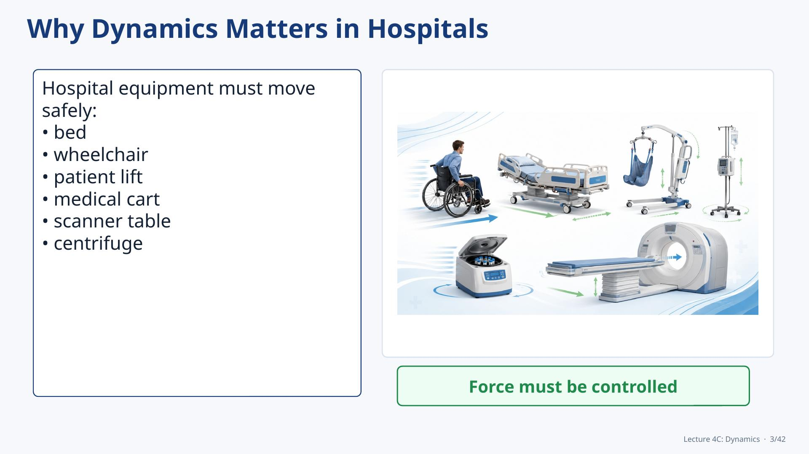
Many hospital devices move: beds, wheelchairs, carts, lifts, scanner tables, and centrifuges.
If the motion is sudden, a patient can be frightened or injured.
If the force is too large, equipment can be damaged.
Dynamics helps us think about safe, controlled movement.
Think and answer
Name one hospital device where smooth motion is important.
Show answer
Patient lift, bed, wheelchair, scanner table, cart.
Force Changes Motion
Force can start, stop, speed up, slow down, or change direction.
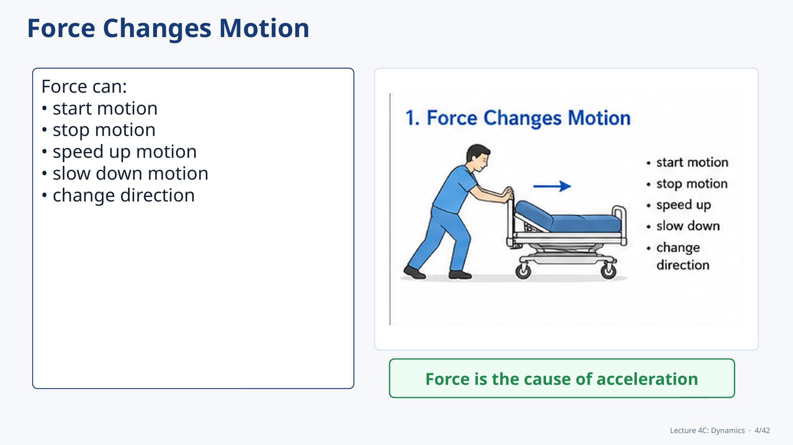
A force is not only a push or pull. A force can change motion.
It can start motion from rest.
It can stop a moving object.
It can make motion faster or slower.
It can also change direction.
Think and answer
What are two things a force can do to motion?
Show answer
Start, stop, speed up, slow down, or change direction.
Inertia
Inertia = resistance to change of motion.
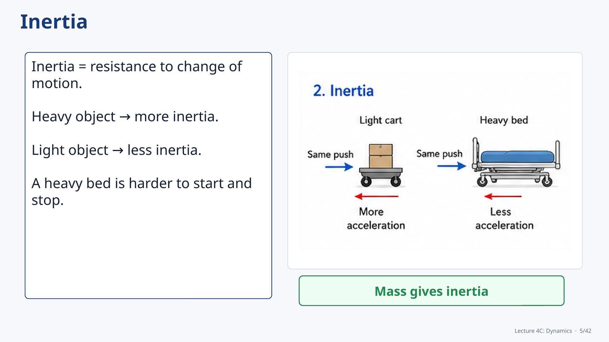
Inertia means an object tends to keep its current state of motion.
If it is at rest, it tends to stay at rest.
If it is moving, it tends to keep moving.
A heavy hospital bed has more inertia than a small cart.
Think and answer
Which has more inertia: a heavy bed or a light cart?
Show answer
A heavy bed.
Heavy Bed vs Light Cart
Same push, different acceleration.
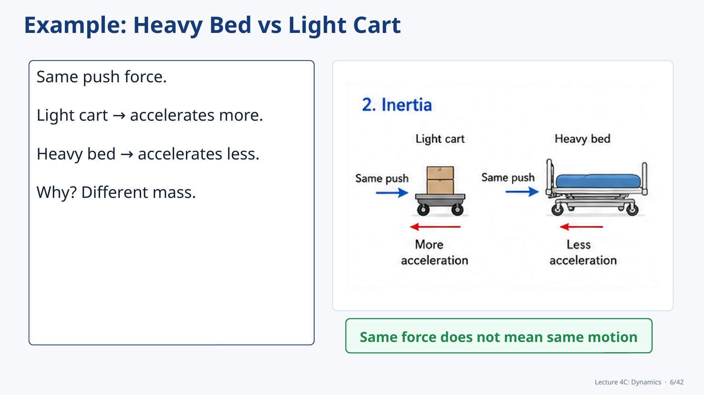
Imagine the same push acts on a light cart and a heavy bed.
The light cart accelerates more.
The heavy bed accelerates less.
The force is the same, but the mass is different.
This idea leads to Newton’s second law.
Think and answer
Why does the heavy bed accelerate less?
Show answer
Because it has more mass / more inertia.
Part 2 — Newton’s Laws and Free-Body Diagrams
Newton’s laws help us calculate and understand motion safely.
Newton’s First Law
If total force is zero, motion does not change.
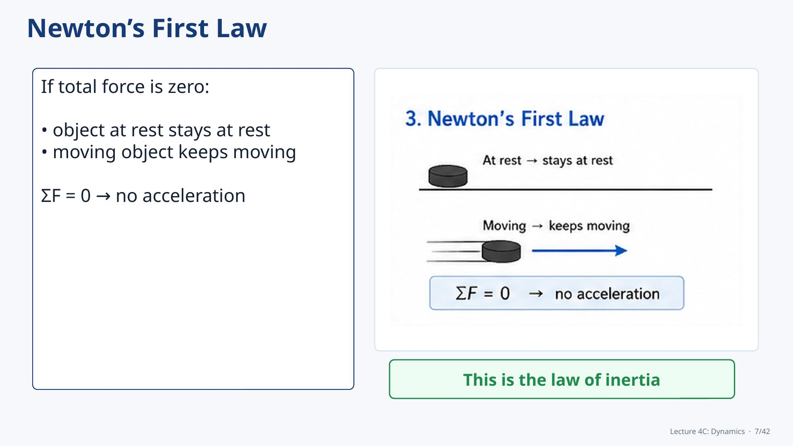
Newton’s first law is the law of inertia.
If the net force is zero, there is no acceleration.
An object at rest stays at rest.
An object moving keeps moving with constant velocity.
Formula idea: ΣF = 0 → a = 0.
Think and answer
If net force is zero, what is acceleration?
Show answer
Zero.
Newton’s Second Law
Force causes acceleration.
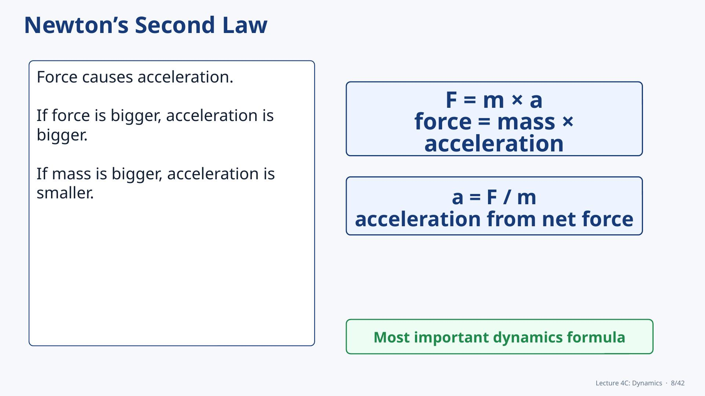
Newton’s second law is the main formula of dynamics.
F = m × a.
If force increases, acceleration increases.
If mass increases, acceleration decreases.
We can also write a = F / m.
Think and answer
What is Newton’s second law formula?
Show answer
F = m × a.
Meaning of F = ma
Force, mass, acceleration, and units.
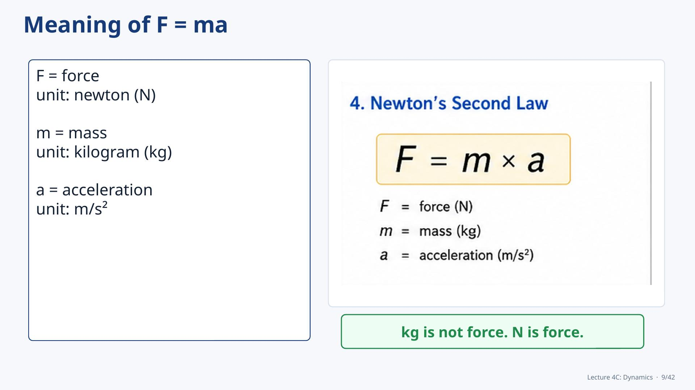
F means force. Unit: newton, N.
m means mass. Unit: kilogram, kg.
a means acceleration. Unit: m/s².
One newton is the force needed to give 1 kg an acceleration of 1 m/s².
Think and answer
What is the unit of force?
Show answer
Newton, N.
Newton’s Third Law
For every action, there is an equal and opposite reaction.
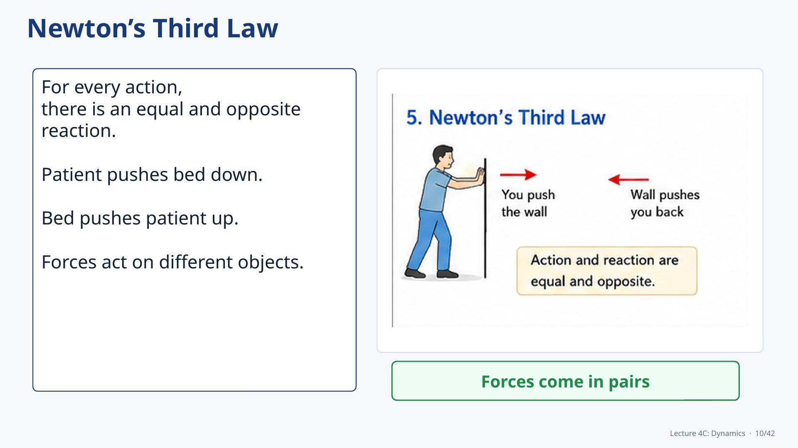
Forces come in pairs.
If a patient presses a bed down, the bed presses the patient up.
The two forces are equal in size and opposite in direction.
But they act on different objects, so they do not cancel each other on one object.
Think and answer
Do action and reaction act on the same object?
Show answer
No. They act on different objects.
Free-Body Diagram Review
Draw the object and the forces only.
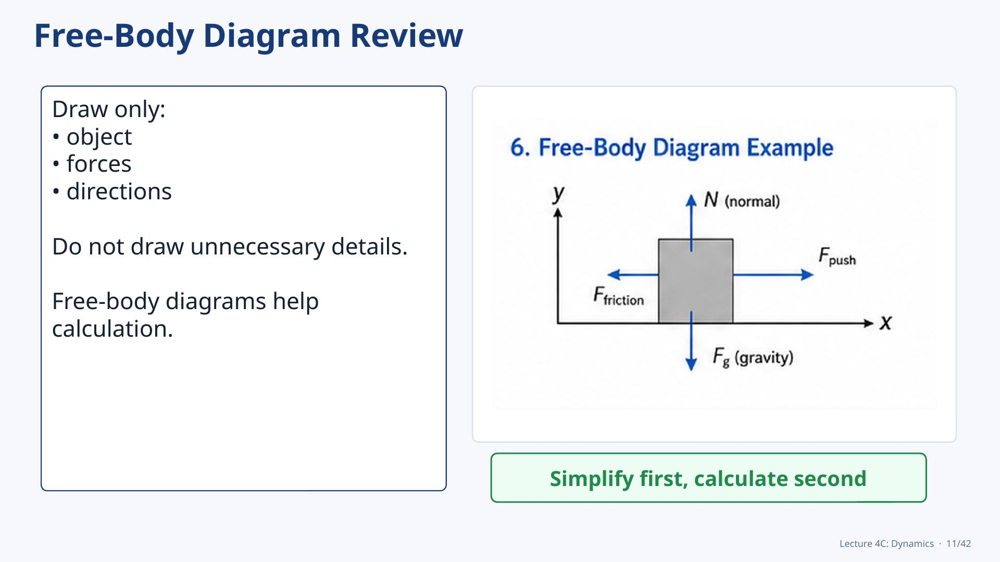
A free-body diagram helps us think clearly.
Do not draw every detail of the real object.
Draw the object as a simple shape.
Draw force arrows: gravity, normal force, push, friction, tension, and so on.
Think and answer
Why do we use a free-body diagram?
Show answer
To focus only on forces.
Forces on a Moving Cart
Push, friction, gravity, and normal force.
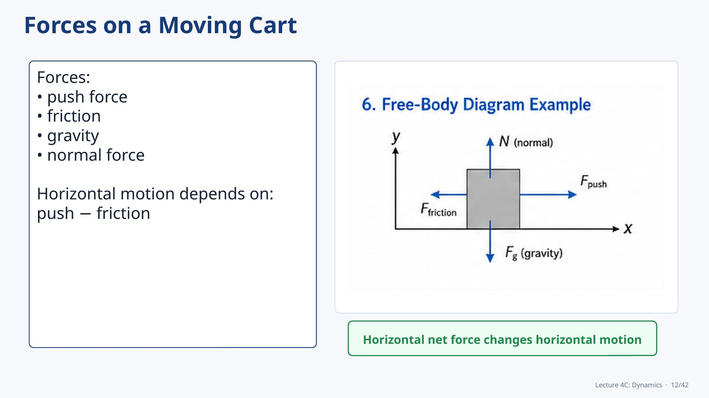
A moving cart has several forces.
Gravity pulls down.
The floor pushes up with normal force.
A person pushes forward.
Friction acts backward.
Horizontal motion depends mainly on push force minus friction.
Think and answer
Which force usually acts opposite to motion?
Show answer
Friction.
Net Force
Net force = total force.
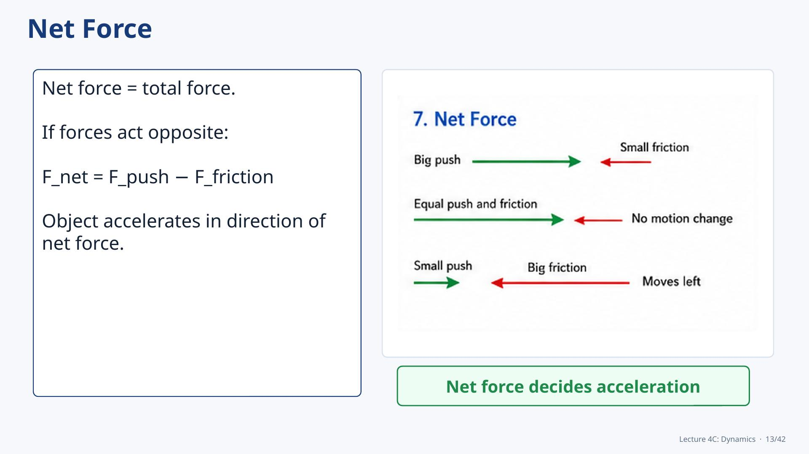
Net force means the final total force after adding forces with directions.
If forces act in opposite directions, we subtract.
Example: F_net = F_push − F_friction.
Acceleration is in the direction of the net force.
Think and answer
If push is 80 N and friction is 20 N, what is net force?
Show answer
60 N forward.
Part 3 — Gravity, Weight, and Apparent Weight
Gravity and weight are related, but they are not exactly the same idea.
Gravity Pulls Down
Gravitational force is Fg = mg.
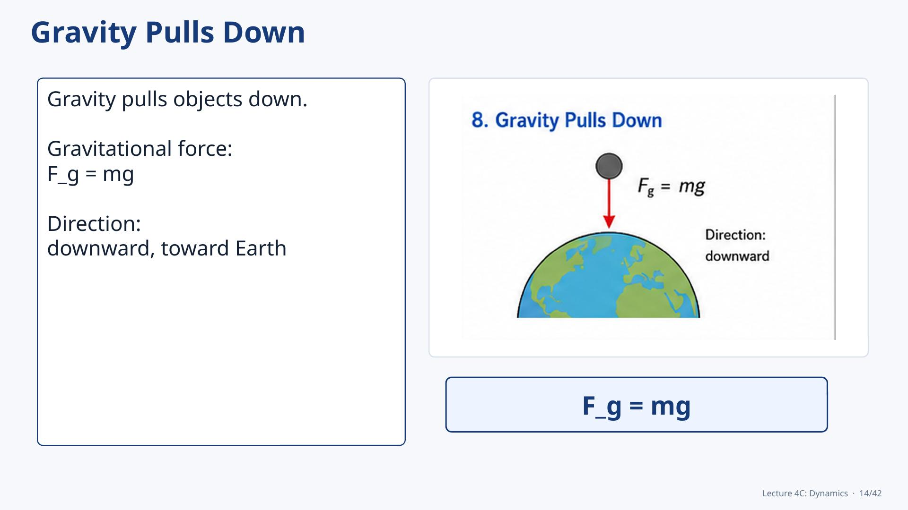
Gravity is the force from Earth.
Earth pulls objects downward.
For a patient, the gravitational force is Fg = mg.
The direction is downward, toward Earth.
Think and answer
What is the formula for gravitational force?
Show answer
Fg = mg.
What Is Weight?
In physics, weight is force on a support or suspension.
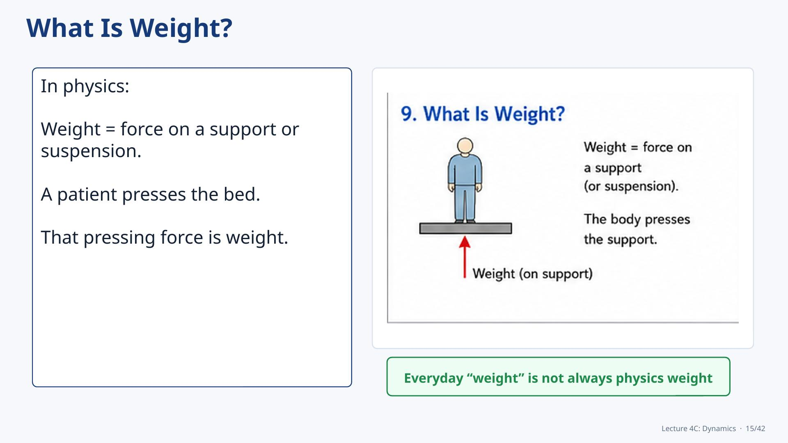
In everyday language, people often say weight when they mean body mass.
In physics, weight has a more exact meaning.
Weight is the force with which a body presses on a support or pulls on a suspension.
A patient on a bed presses the bed. That pressing force is weight.
Think and answer
In physics, what is weight?
Show answer
Force on a support or suspension.
At Rest: Same Size
Fg and weight can have the same size at rest.
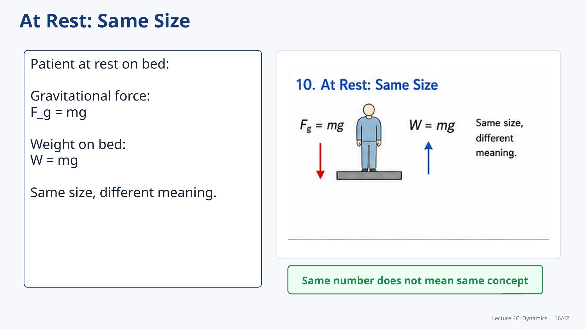
A patient rests on a bed.
Earth pulls the patient down: Fg = mg.
The patient presses the bed: W = mg.
In this simple case, the sizes are the same.
But the meanings are different.
Think and answer
Are gravitational force and weight always the same idea?
Show answer
No. They can have the same size, but the meanings are different.
Important Difference
Gravity pulls the body. Weight acts on support or suspension.
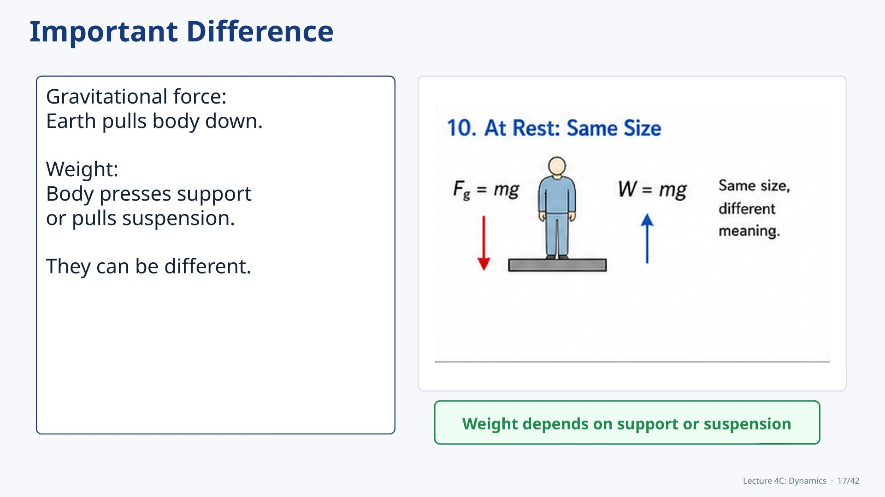
Gravitational force is Earth pulling the body down.
Weight is the force on the support or suspension.
These can be different when the support accelerates.
This is why you can feel heavier or lighter in an elevator.
Think and answer
When can weight change?
Show answer
When the support or suspension accelerates.
Elevator Going Up
You feel heavier.
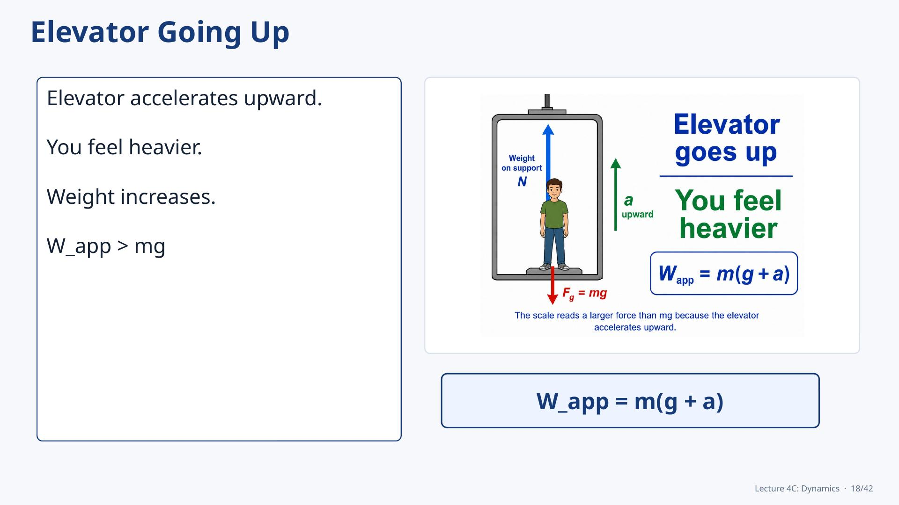
If an elevator accelerates upward, the floor must push harder on the person.
The person feels heavier.
The gravitational force is still mg.
But the apparent weight is larger: W_app = m(g + a).
Think and answer
Does gravity increase when the elevator goes up?
Show answer
No. Apparent weight increases, but gravity is still mg.
Elevator Going Down
You feel lighter.
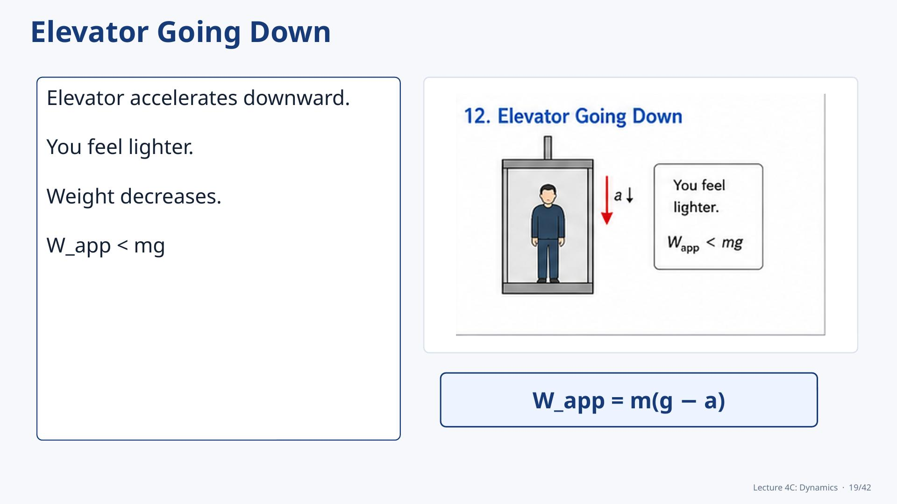
If an elevator accelerates downward, the floor pushes less strongly.
The person feels lighter.
The gravitational force is still mg.
The apparent weight is smaller: W_app = m(g − a).
Think and answer
Why do you feel lighter when accelerating downward?
Show answer
The support force becomes smaller.
Free Fall
Gravity acts, but apparent weight is zero.
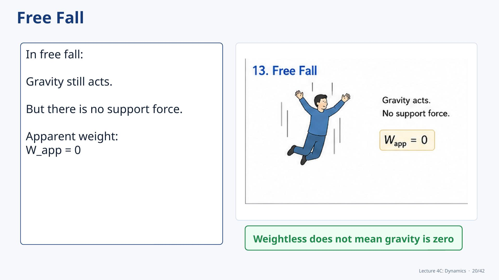
In free fall, gravity still acts on the body.
But there is no support force from a floor or bed.
So the apparent weight is zero.
This is the idea behind weightlessness.
Think and answer
In free fall, does gravity still act?
Show answer
Yes.
Hospital Link: Patient Lift
Tension changes when acceleration changes.
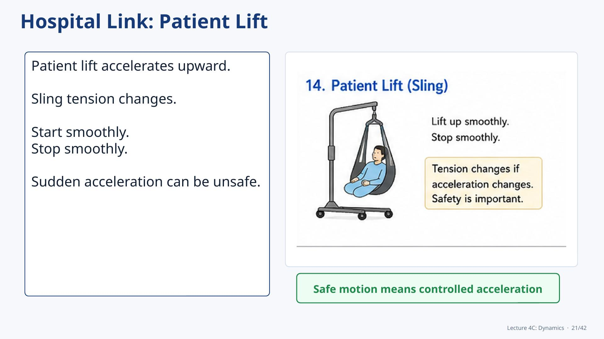
A patient lift holds a patient by a sling.
The sling tension supports the patient.
If the lift starts or stops suddenly, tension changes quickly.
That can be uncomfortable or unsafe.
Start smoothly. Stop smoothly.
Think and answer
Why must a patient lift start and stop smoothly?
Show answer
Because force/tension changes can be unsafe or uncomfortable.
Part 4 — Friction and Dynamics Tasks
First find the net force. Then use F = ma.
Friction
Friction opposes motion.
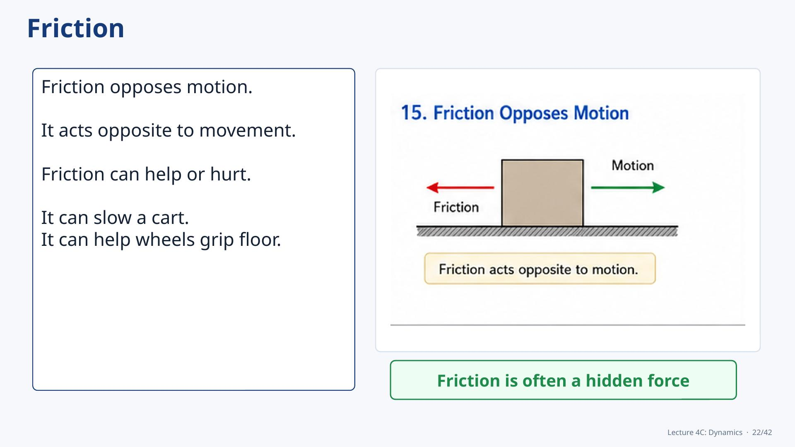
Friction is a force between surfaces.
It usually acts opposite to motion.
Friction can make movement harder.
But friction can also help wheels grip the floor.
Too little friction can be dangerous.
Think and answer
Does friction always act in the same direction as motion?
Show answer
No. It usually acts opposite to motion.
Simple Friction Idea
Surface and normal force matter.
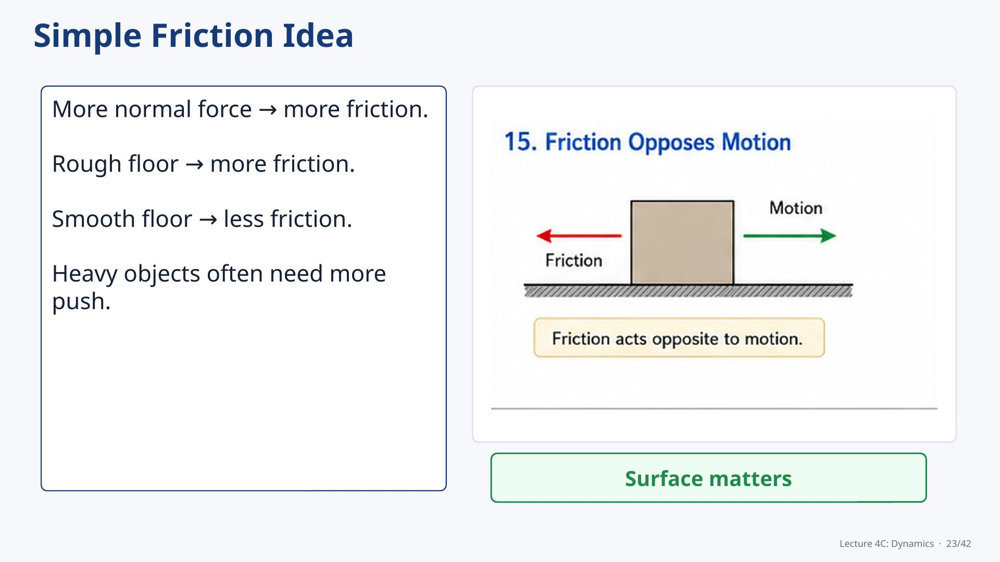
Rough surfaces usually create more friction.
Smooth surfaces usually create less friction.
More normal force often means more friction.
A heavy loaded cart can be harder to push than an empty cart.
Think and answer
Which floor gives more friction: rough or smooth?
Show answer
Rough floor.
Push Cart with Friction
Find the net force first.
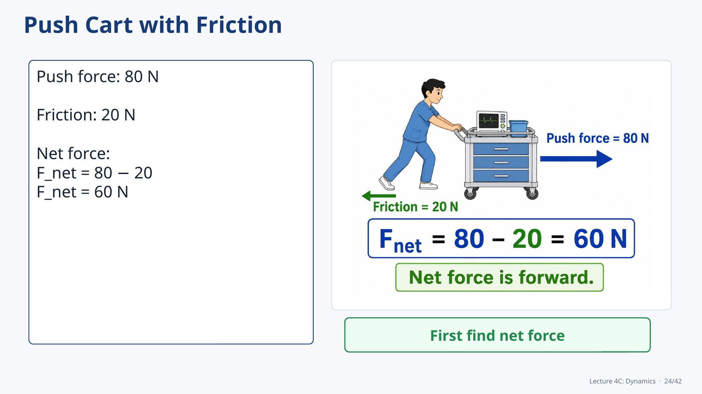
A person pushes a cart with 80 N.
Friction is 20 N in the opposite direction.
Net force is F_net = 80 − 20 = 60 N.
This forward net force causes acceleration.
Think and answer
What is the net force?
Show answer
60 N forward.
Task 1: Find Acceleration
Use a = F / m.
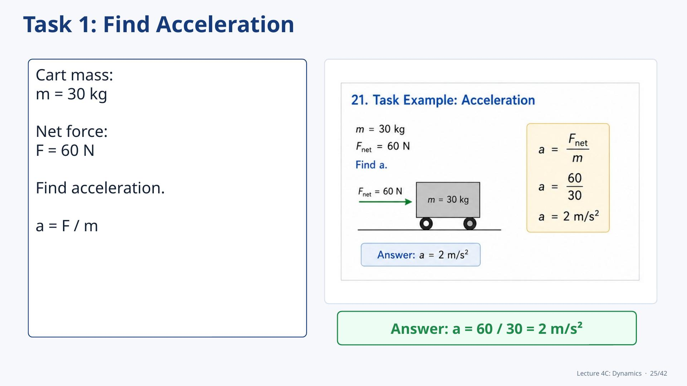
Cart mass is m = 30 kg.
Net force is F = 60 N.
Find acceleration.
a = F / m = 60 / 30 = 2 m/s².
Think and answer
What is the acceleration?
Show answer
2 m/s².
Task 2: Find Force
Use F = ma.
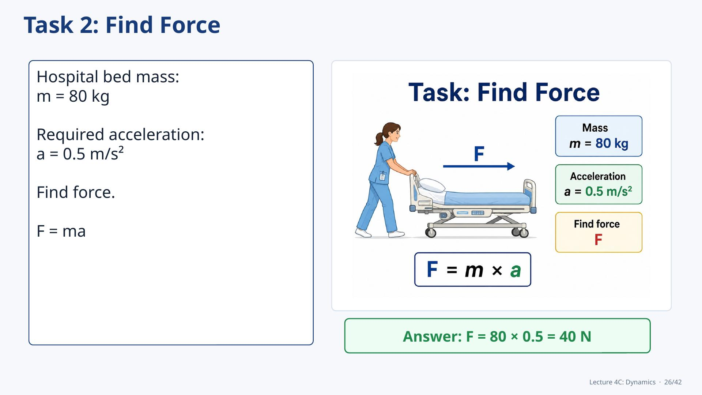
Hospital bed mass is m = 80 kg.
Required acceleration is a = 0.5 m/s².
Find force.
F = ma = 80 × 0.5 = 40 N.
Think and answer
What force is needed?
Show answer
40 N.
Task 3: Push and Friction
First find net force.
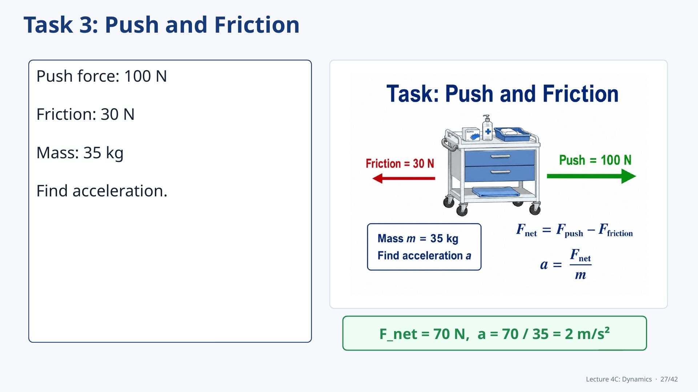
Push force is 100 N.
Friction is 30 N.
Mass is 35 kg.
F_net = 100 − 30 = 70 N.
a = 70 / 35 = 2 m/s².
Think and answer
What is the acceleration?
Show answer
2 m/s².
Task 4: Elevator Apparent Weight
Elevator accelerates upward.
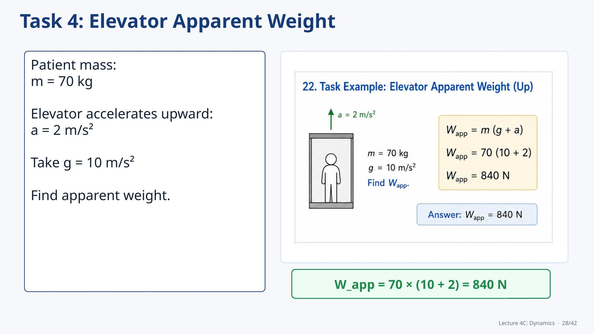
Patient mass is 70 kg.
Elevator acceleration is 2 m/s² upward.
Use g = 10 m/s².
W_app = m(g + a).
W_app = 70 × (10 + 2) = 840 N.
Think and answer
What is the apparent weight?
Show answer
840 N.
Task 5: Elevator Going Down
Elevator accelerates downward.
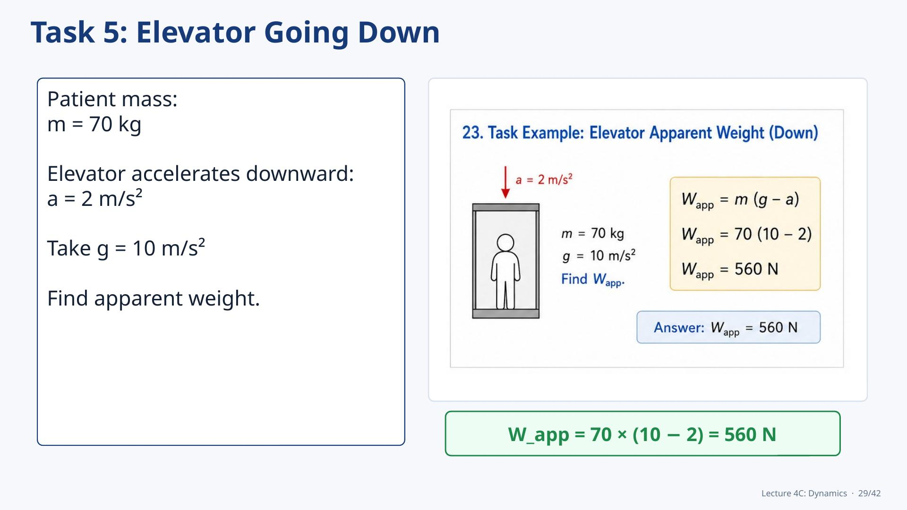
Patient mass is 70 kg.
Elevator acceleration is 2 m/s² downward.
Use g = 10 m/s².
W_app = m(g − a).
W_app = 70 × (10 − 2) = 560 N.
Think and answer
What is the apparent weight?
Show answer
560 N.
Part 5 — Work and Energy
Work and energy connect force, motion, speed, and height.
Mechanical Work
Work = force × distance.
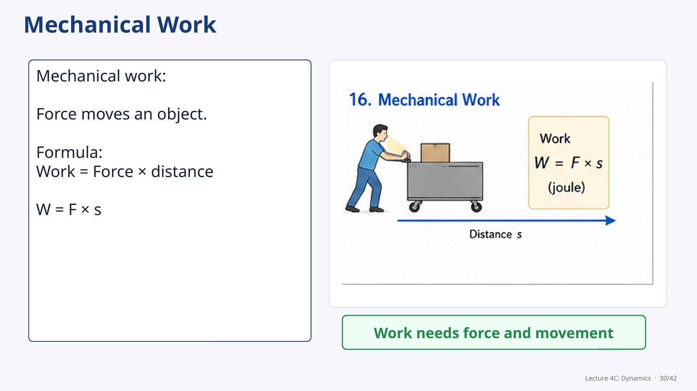
Mechanical work means a force moves an object through a distance.
If you push a cart and the cart moves, you do work.
Formula: W = F × s.
Unit: joule, J.
Think and answer
What is the formula for work?
Show answer
W = F × s.
Work Unit
1 joule = 1 newton × 1 meter.
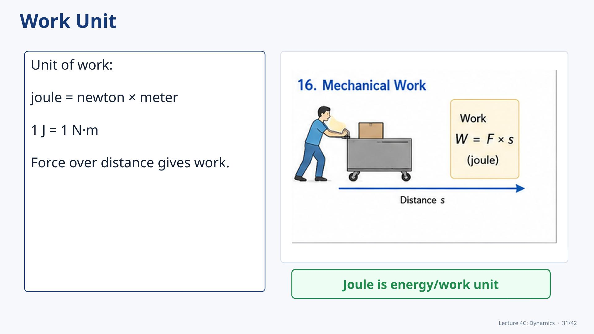
The unit of work is joule.
1 J = 1 N·m.
If a 1 N force moves an object 1 m, the work is 1 J.
Work needs both force and distance.
Think and answer
What is 1 joule equal to?
Show answer
1 N·m.
Work Example
Push force 50 N, distance 4 m.
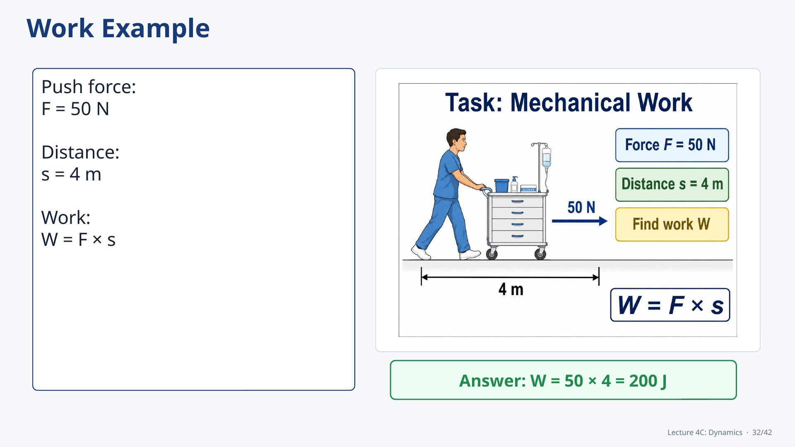
A person pushes a medical cart with 50 N.
The cart moves 4 m.
W = F × s.
W = 50 × 4 = 200 J.
Think and answer
How much work is done?
Show answer
200 J.
Kinetic Energy
Kinetic energy = energy of motion.
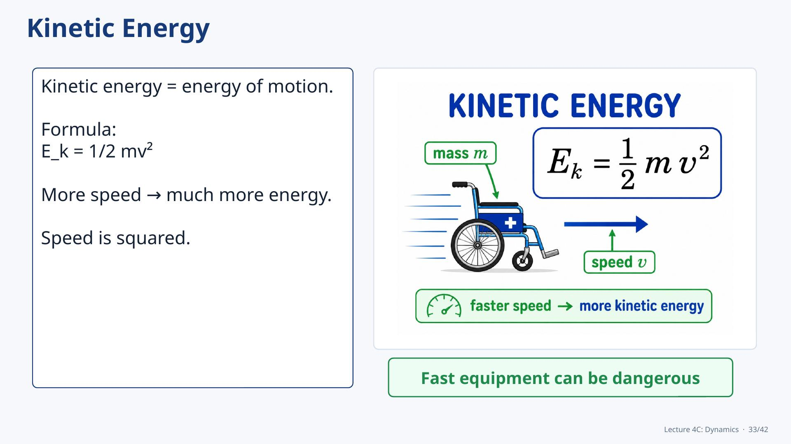
Kinetic energy is energy of motion.
Formula: E_k = 1/2 m v².
Speed is very important because it is squared.
A fast cart can be dangerous because it has more kinetic energy.
Think and answer
What happens to kinetic energy when speed increases?
Show answer
It increases strongly because speed is squared.
Potential Energy
Gravitational potential energy = energy from height.
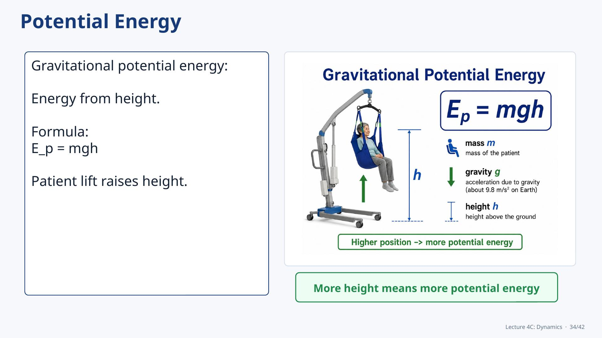
Potential energy is stored energy.
Gravitational potential energy depends on height.
If a patient lift raises a patient, potential energy increases.
Formula: E_p = mgh.
Think and answer
What formula do we use for gravitational potential energy?
Show answer
E_p = mgh.
Energy Safety Idea
More speed and more height mean more energy.
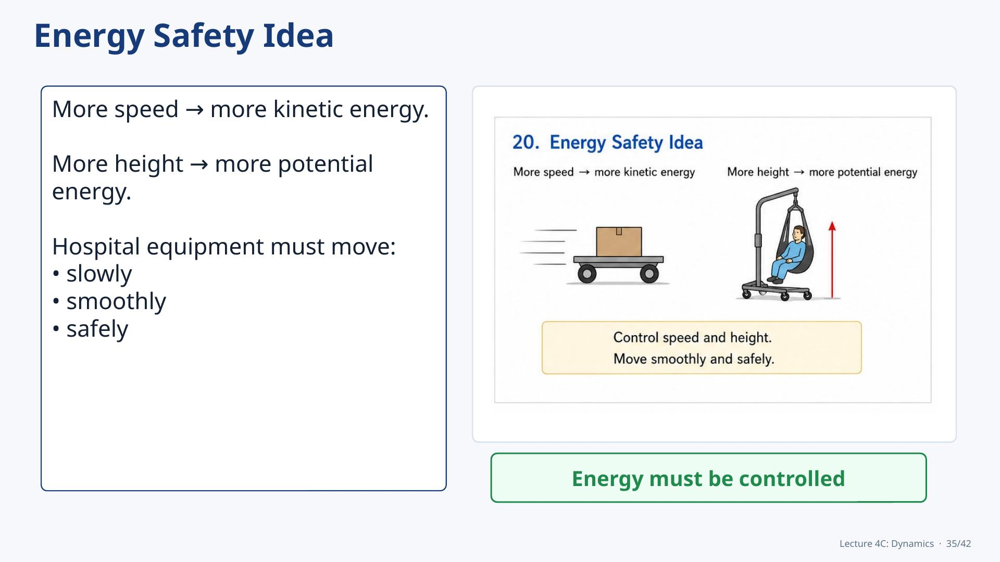
Energy is important for safety.
More speed means more kinetic energy.
More height means more potential energy.
Hospital equipment should move slowly, smoothly, and safely.
Think and answer
Why should hospital equipment avoid high speed?
Show answer
High speed means more kinetic energy and more danger.
Part 6 — More Practice and Summary
Check units. Check direction. Explain the meaning, not only the answer.
Task 6: Work
A cart is pushed with 40 N for 5 m.
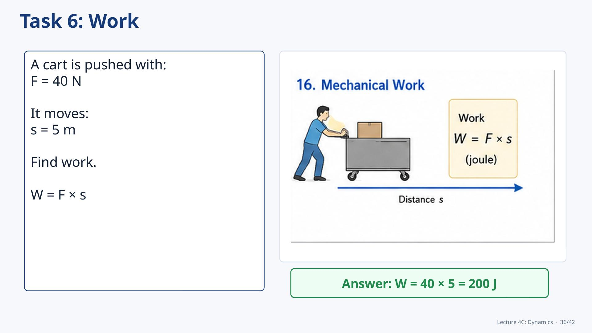
Use W = F × s.
Force is 40 N.
Distance is 5 m.
W = 40 × 5 = 200 J.
Think and answer
How much work is done?
Show answer
200 J.
Task 7: Kinetic Energy
m = 20 kg, v = 2 m/s.
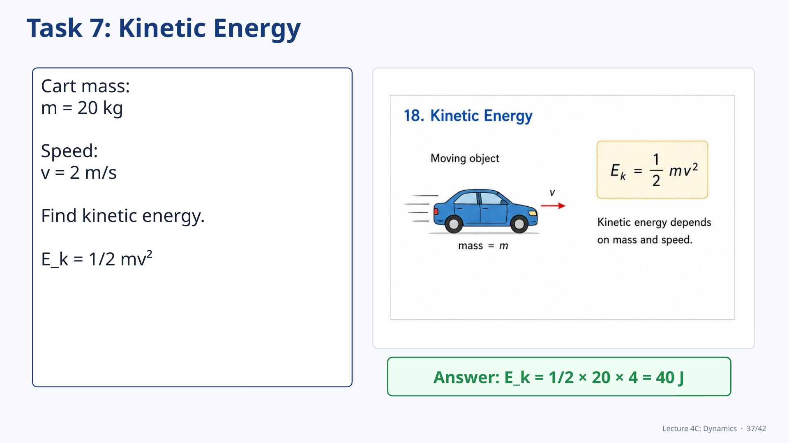
Use E_k = 1/2 m v².
Mass is 20 kg.
Speed is 2 m/s.
v² = 4.
E_k = 1/2 × 20 × 4 = 40 J.
Think and answer
What is the kinetic energy?
Show answer
40 J.
Task 8: Potential Energy
m = 70 kg, h = 1 m.
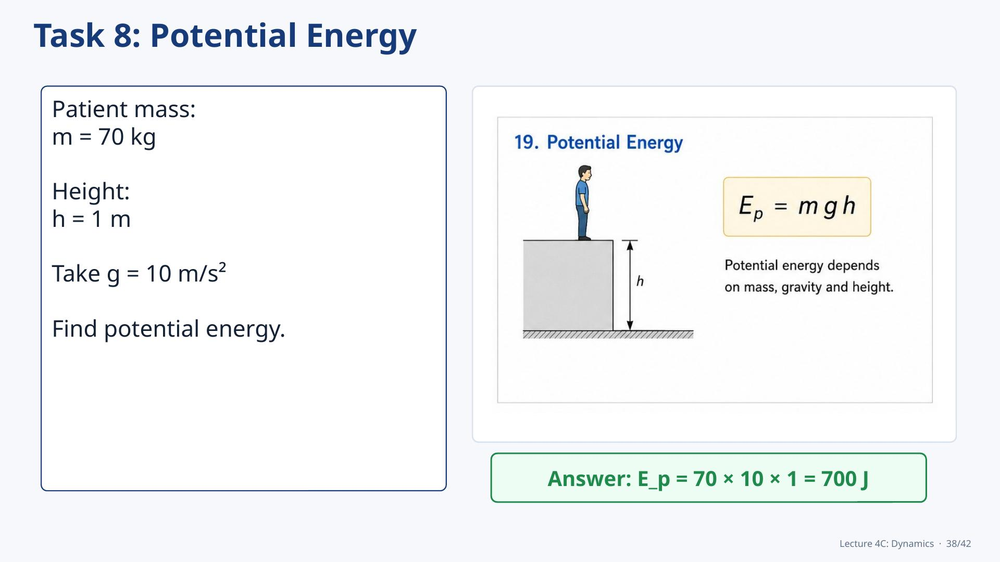
Use E_p = mgh.
Mass is 70 kg.
g = 10 m/s².
Height is 1 m.
E_p = 70 × 10 × 1 = 700 J.
Think and answer
What is the potential energy?
Show answer
700 J.
Mixed Task: Lift
m = 60 kg, h = 1.5 m.
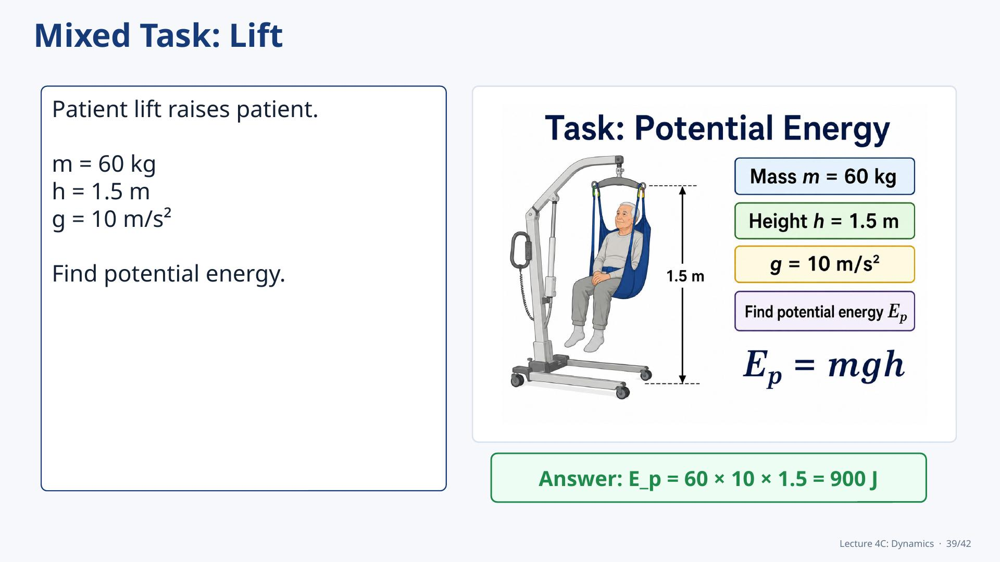
A patient lift raises a patient.
Mass is 60 kg.
Height is 1.5 m.
Use g = 10 m/s².
E_p = 60 × 10 × 1.5 = 900 J.
Think and answer
What is the potential energy increase?
Show answer
900 J.
Common Mistakes
Check units, direction, and meaning.
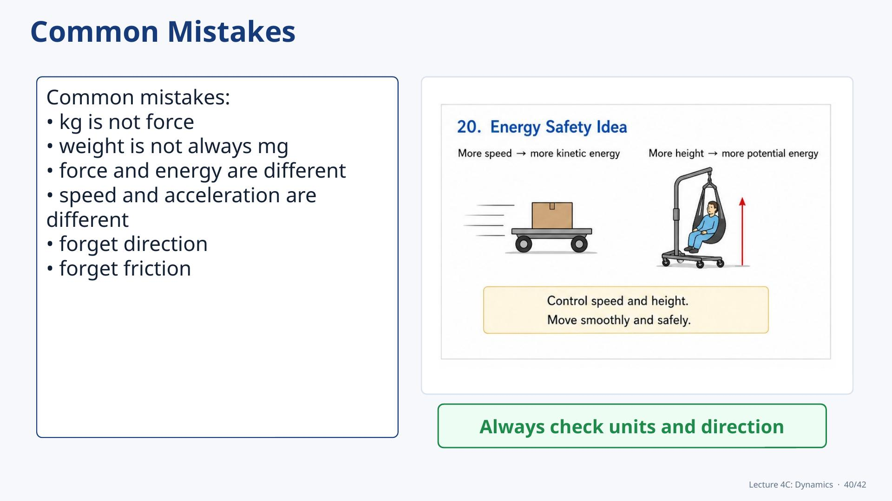
kg is not force. kg is mass.
Weight is not always the same as gravitational force.
Force and energy are different ideas.
Speed and acceleration are different.
Do not forget friction and direction.
Think and answer
Is kg a unit of force?
Show answer
No. kg is a unit of mass.
Dynamics Summary
Force causes acceleration. Energy is connected with motion.
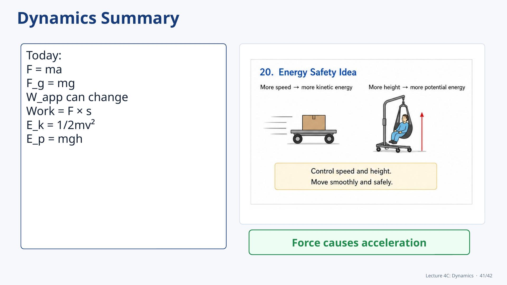
Today we learned: F = ma.
Gravity pulls down: F_g = mg.
Apparent weight can change.
Work is force times distance: W = F × s.
Kinetic energy is energy of motion.
Potential energy is energy of height.
Think and answer
What is the most important formula in dynamics?
Show answer
F = ma.
Final Message
Safe motion is slow, smooth, controlled, and predictable.
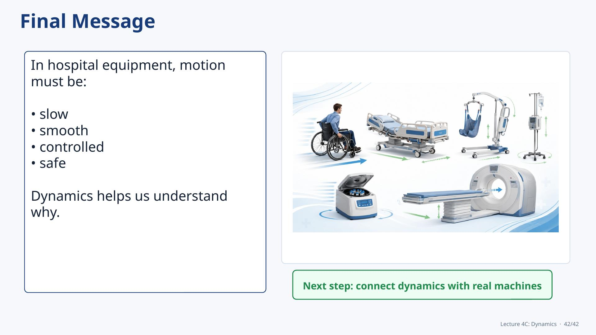
Hospital equipment is not only metal and electronics.
It moves.
When it moves, forces and energy are involved.
For patient safety, motion must be slow, smooth, controlled, and predictable.
Dynamics helps us understand why.
Think and answer
Why does dynamics matter in hospitals?
Show answer
Because forces and energy affect safety during motion.
{kind=link}